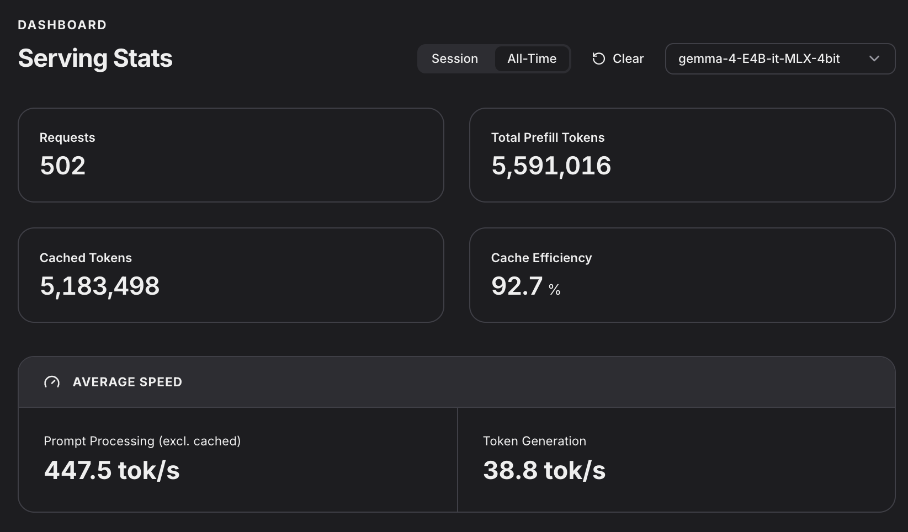

Goals Link to heading
I have been using frontier models with Claude and Codex for over a year. They are powerful and effective.
However, I value digital autonomy and wish to avoid total dependence on a large corporation for LLM access, in addition to always needing an internet connection.
While my setup may not match theirs in terms of raw power or speed, keeping my personal data local is a requirement for me.
Self-hosting Model Inference Link to heading
My machine is a Macbook Pro M1 Max with 32GB of RAM. Although it lacks a dedicated AI GPU, its unified memory allows for a workable setup.
I chose oMLX as the provider. Since it leverages RAM and SSD to enhance performance, it was a suitable workaround for my hardware limitations.
Model Link to heading
I am still exploring options. With oMLX and its manager interface, which pulls model information from HuggingFace, I can easily filter models compatible with my hardware.
So far, I have tested these:
- gemma-4-E4B-it-MLX-4bit
- Qwen3.8-27B-MLX-4bit
oMLX also simplified model optimization with a single button press.
Here is the dashboard for Average Speed while using Gemma4.

While the speed is not exceptional, I am satisfied with the performance.
Agent Harness Link to heading
For this part, I decided to use OpenCode.